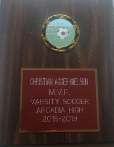
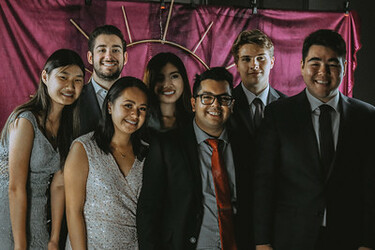

Christian Agger-Nielsen
I am a first year business major studying at the University of California Riverside, who is looking for internships and part time jobs in the finance and accounting. I am a quick learner and I enjoy problem solving and working with other people. In addition to academics I am involved with two organizations on campus at UCR, UNICEF, and Future Business Leaders of America PBL. As a member of the fundraising comittee in UNICEF I am able to solve financial problems and come up with creative ways to injecting capital into our organization. As a member of the Outreach commitee in Future Business Leaders of America PBL I am able to utilize interpersonal skills to recruit students to joing FBLA, and also put together presentations to help inform members of the UCR community how they could set themselves up for success in the business world.
Experience
Outreach Committee Member
• Planned and implemented effective programs to advertise the organization.
• Utilized interpersonal skills to pitch the organization to students during campus events.
• Made announcements during weekly chapter meetings to communicate about upcoming events.
Fundraising Committee Member
• Collaborated to successfully raise capital and allocate funds for the success of the organization.
• Assisted in raising over $250 dollars in just the first 2 months of membership.
• Implemented strategies to analyze the financial well-being of the organization.
Volunteer
• Tracked and compiled vital biological data gathered from wildlife and flora.
• Renovated and refurbished public parks and schools in low income neighborhoods.
• Instituted streamlined measures for reducing the number of trees that had to be managed and tracked.
Education
University of California Riverside
Portfolio


.jpg)